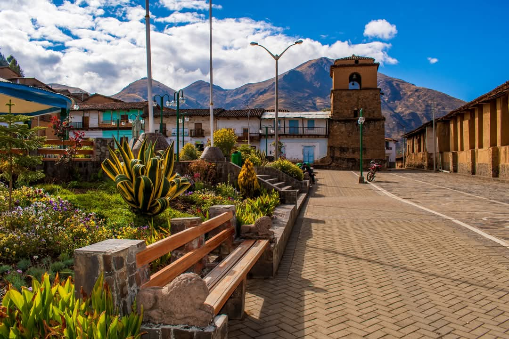

"Distrito de Llapo: El Corazón de Pallasca"
Llapo es uno de los 11 distritos más alto y aniguo de la provincia de Pallasca, en Áncash. Conocido por su gente acogedora, sus festividades patrias y patronales, y su arquitectura colonial, Llapo guarda siglos de historia y tradición. A través de este portal te invitamos a recorrer sus rincones y conocer la calidez de nuestra gente.
Ubicado a más de 3,428 metros sobre el nivel del mar en la provincia de Pallasca, Llapo es cariñosamente conocido como el "Nido de Águilas" de Áncash. Su historia es tan profunda como sus montañas: sus raíces provienen de la antigua cultura de los Llapas, y tras la época colonial adoptó el nombre de Villa de San Marcos. Fue oficializado como distrito un 2 de enero de 1857, bajo el mandato del presidente Ramón Castilla.
Pero más allá de los números y las fechas, Llapo es un lugar que se siente en el pecho. Es el calor de su gente emprendedora, la majestuosidad de su templo virreinal, sus calles tranquilas que invitan a caminar despacio y el orgullo de conservar tradiciones que han pasado de generación en generación.
Más información